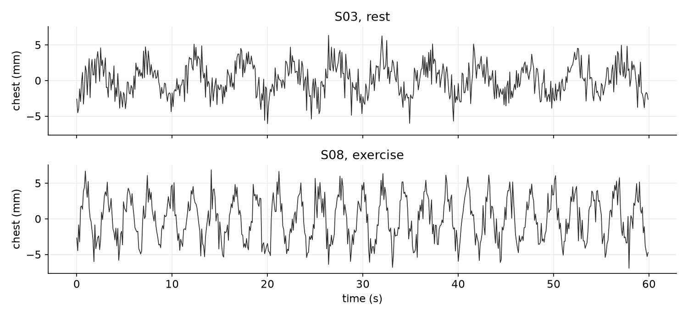
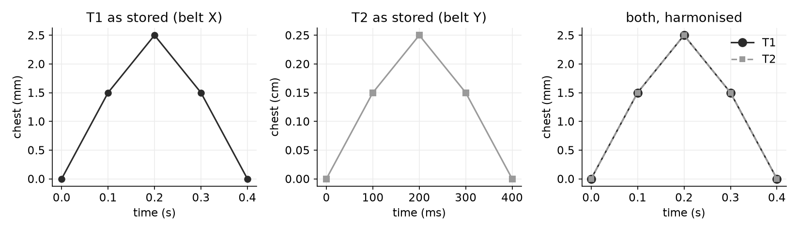
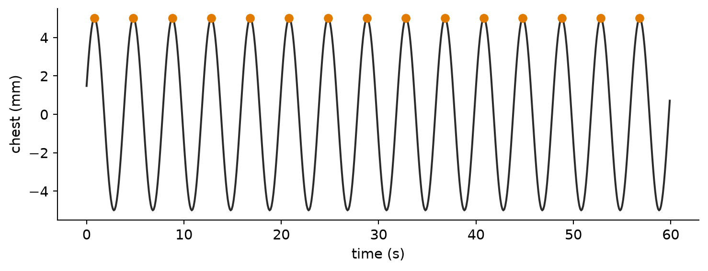
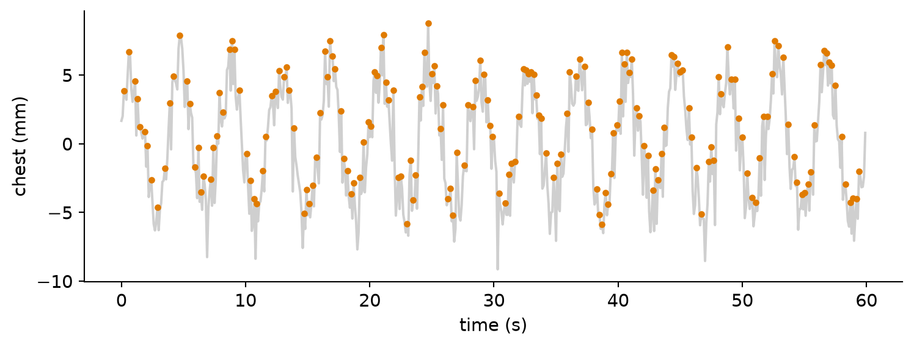
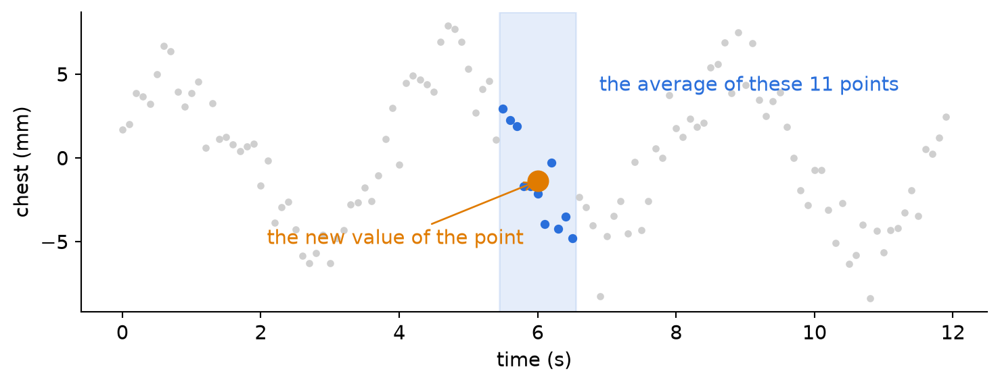
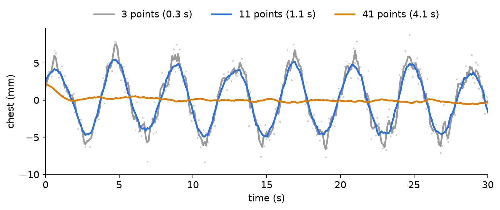
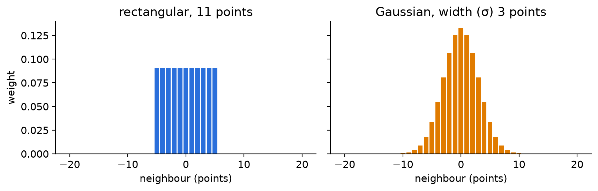

Biomedical Engineering Skills 2
Python 6 — The whole method, one more time
massimo.vassalli@glasgow.ac.uk
The whole method
DEFINE
↓
DECOMPOSE
↓
SPECIFY ⇄ DIAGNOSE
↓
VALIDATE
Six weeks ago this was a diagram. Since then you have used every box — one at a time.
Today: the whole method, once, on a new problem. Then the final exercise, which is the same method on another one.
DEFINE: the objective, in numbers
What is the computation for? Say it as a number, with its units — and, where you can, say what success looks like before you compute anything.
| vague | defined |
|---|---|
| “look at the data” | one number per record, with its units, and how it is summarised |
| “is the method good?” | on data whose answer we know, the method returns that answer |
| “is there a difference?” | the difference between groups is larger than the spread within each |
Tip
A definition of success written beforehand cannot be bent to fit the result afterwards.
DECOMPOSE: the steps
Every problem this semester has had the same four steps — sometimes disguised:
| step | what it does | you have done it in |
|---|---|---|
| set the environment | the right Python, the right packages, reproducibly | weeks 1 and 5 |
| open and harmonise | get the data in, and make them clear to the computer: one format, known units | weeks 4 and 5 |
| transform | prepare the data so that the information emerges: clean, filter, convert | weeks 2–4 (dropped samples, artefacts) |
| quantify | turn the prepared data into the number DEFINE asked for | week 3 (percent_above), Assignment 3 (the longest stretch) |
Each step is a function with a signature, a prompt and tests. main.py calls them in order — and contains nothing else.
SPECIFY ⇄ DIAGNOSE: each step, proved
For each step:
- Specify it: the signature, the decisions, the prompt
- Have it built
- Diagnose it: does it do what was specified —
- on the edge cases (empty, missing, exactly on a limit)
- on digital data: data made so that you already know the answer
- with an automated set of tests that runs in one command:
python -m pytest
Important
A step is not finished when it runs. It is finished when you can show that it works — and this can be done on a different, smaller dataset from the real one, chosen because you know its numbers.
VALIDATE: all the data, and the question
Only now, the real data — all of it:
- look at the results together: trends, groups, values that stand out
- do they generalise: does the step chosen on digital data work on every real record?
- are they stable: do they stay put when you change a parameter that should not matter?
| DIAGNOSE | VALIDATE | |
|---|---|---|
| question | did we build it right? | did we build the right thing? |
| data | small, known, digital | all of it |
| when it fails, go back to | SPECIFY | DEFINE or DECOMPOSE |
A walk through: the breathing study
DEFINE: what are we measuring?
A chest belt records how much the chest expands, ten times per second, for 60 s. Twelve subjects: six at rest, six after exercise.

Each up-and-down is a breath. By eye, S08 breathes about twice as often as S03 — and both recordings are noisy.
DEFINE: the goal, in numbers
The number. For each subject, the breathing rate: the number of breaths in the recording, divided by its duration — in breaths per minute. One breath = one peak of the chest signal.
The summary. For each condition, the mean ± standard deviation of the rates, and how many subjects.
Success, for the method. On digital recordings whose rate we choose — 12, 15, 25 breaths per minute, with noise like the real one — the method returns exactly that rate.
Success, for the study. The difference between rest and exercise is larger than the spread within each group.
Note
Nothing here mentions code. That is the point of DEFINE: it stays true whatever code you end up writing — and it tells you, before you start, what you will have to show.
DECOMPOSE: always the same
| step | in the breathing study | function |
|---|---|---|
| set the environment | .venv, requirements.txt (zarr, scipy, pytest) |
— |
| open and harmonise | two belts, two layouts, two sets of units → one record, in s and mm | load_recording |
| transform | the chest signal is noisy: smooth it | smooth |
| quantify | count the breaths, divide by the duration | breaths_per_minute |
| (all the data) | every subject, grouped by condition, mean ± sd | run_study |
The environment: you know it. A .venv, python -m pip install -r requirements.txt, python -m pytest, the clean rebuild before you submit.
Tip
We will walk the steps in a different order: open, then quantify, and only then transform — because the transform exists for the sake of the quantify, and you will see why only once you try to count.
Open and harmonise
The study on disk
/
├── S01
│ └── data (600, 2) float64
├── S02
│ ├── chest (600,) float64
│ └── time (600,) float64
├── S03
│ └── data (600, 2) float64
...Two belt models, and they do not agree on how to store a recording:
- belt X: one array, 600 rows × 2 columns
- belt Y: two arrays, one per quantity
The same information. A loader that knows only one layout fails on half the study — or, worse, reads the wrong thing without failing.
One matrix, or one array per quantity?
Belt X: a matrix
S01/data (600, 2)
attrs: columns ["time", "chest"]
units ["s", "mm"]A matrix keeps the rows together (row 10 is one moment in time); separate arrays each carry their own units and can have their own types. Both are good. What matters is that the description is stored with the data: which column is which, in which units.
Warning
table[:, 1] is a position. If the order of the columns is written in the data, read it and never assume it: a wrong column raises no error, it gives you numbers — just not the right ones.
Harmonise: one record, known units
Whatever the belt, the loader returns the same thing:
| key | type | units |
|---|---|---|
"subject_id" |
str |
— |
"condition" |
str |
— |
"time_s" |
numpy array | s |
"chest_mm" |
numpy array | mm |
S02 as stored: time [0. 100. 200.] ms, chest [0.318 0.025 0.296] cm
S02 harmonised: time [0. 0.1 0.2] s, chest [3.18 0.25 2.96 ] mmImportant
The conversion table is a specification: it goes in the prompt, line by line. A wrong factor is the most silent failure there is — no error, plausible numbers, all off by a power of ten.
Check it on data you know
data/tiny.zarr: the same five points, written once by each belt — small enough to know by heart.

As stored, the two look different: other numbers, other units. Harmonised, they must be the same curve — and we know which one: time 0, 0.1 … 0.4 s; chest 0, 1.5, 2.5, 1.5, 0 mm.
… as a test
def test_loader_belt_X():
"""T1, belt X (s, mm), written by hand: time 0, 0.1 ... 0.4 s; chest 0, 1.5, 2.5, 1.5, 0 mm."""
rec = breathing.load_recording(TINY, "T1")
assert rec["time_s"] == pytest.approx([0.0, 0.1, 0.2, 0.3, 0.4])
assert rec["chest_mm"] == pytest.approx([0.0, 1.5, 2.5, 1.5, 0.0])
def test_loader_belt_Y():
"""T2, belt Y (ms, cm): the same recording, so the same numbers once converted."""
rec = breathing.load_recording(TINY, "T2")
assert rec["time_s"] == pytest.approx([0.0, 0.1, 0.2, 0.3, 0.4])
assert rec["chest_mm"] == pytest.approx([0.0, 1.5, 2.5, 1.5, 0.0])Two layouts, two sets of units, one expected answer, written by hand. If both pass, the loader turns both belts into the same thing — and you never computed the expected values with the code you are testing.
Quantify
A breath is a peak
On a clean digital recording — 15 breaths per minute, no noise — a breath is easy to find: a point higher than both its neighbours. scipy.signal.find_peaks finds them all.
time_s, clean_mm = digital_breathing(15)
peaks, _ = find_peaks(clean_mm)
plt.plot(time_s, clean_mm, color=INK)
plt.plot(time_s[peaks], clean_mm[peaks], "o", color=ORANGE)
plt.xlabel("time (s)"); plt.ylabel("chest (mm)"); plt.show()
print(len(peaks), "peaks in 60 s:", breaths_per_minute(time_s, clean_mm), "breaths per minute")
15 peaks in 60 s: 15.0 breaths per minuteThe step is specified (a peak is a breath; the duration is the number of points × the time step), built, and checked on data whose answer we chose. Nothing new.
The same count, on a noisy recording
The same 15 breaths per minute, with noise like the real belt (1.5 mm):
time_s, noisy_mm = digital_breathing(15, noise_mm=1.5)
peaks, _ = find_peaks(noisy_mm)
plt.plot(time_s, noisy_mm, color=LIGHT)
plt.plot(time_s[peaks], noisy_mm[peaks], "o", ms=3, color=ORANGE)
plt.xlabel("time (s)"); plt.ylabel("chest (mm)"); plt.show()
print(len(peaks), "peaks in 60 s:", breaths_per_minute(time_s, noisy_mm), "breaths per minute")
193 peaks in 60 s: 193.0 breaths per minuteEvery wiggle of the noise is “higher than both its neighbours”. The count is not wrong — the quantify does exactly what it was specified to do. The data are not ready for it.
Transform: prepare the data
Why a transform?
The quantify needs a signal where one breath = one peak. The recording gives one breath = one peak plus the noise.
The transform is the step that turns the data into the representation the quantify needs. Microscopists do the same when they correct an uneven illumination before measuring cells — you will, next year, in ENG3090. Here: remove the fast wiggles of the noise, keep the slow wave of the breath.
Note
A breath lasts about 4 s — 40 points. The noise changes at every point. That difference in speed is what lets us separate them.
Smoothing: average the neighbours
Replace each point with the average of the points around it — a window of \(N\) points centred on it. With \(N = 5\):
\[y_i = \frac{x_{i-2} + x_{i-1} + x_i + x_{i+1} + x_{i+2}}{5}\]

The window (blue) slides along the signal, one point at a time; at each position, the average of the points inside becomes the new value (orange). The random errors of the noise partly cancel in the average; the slow breath, nearly the same across the window, survives.
The size of the window
The same rectangular window, with three sizes:

- 3 points: too small — the noise is still there, and so are the false peaks
- 11 points (1.1 s): the breaths — with a few small bumps still on them
- 41 points (4.1 s, as long as a breath): too big — it averages the breath itself away
Important
The size of the window is the decision: big enough to average out the noise, small enough to keep the fastest thing you need. Say it in the units of the signal (1.1 s), not only in points: points mean nothing without the sampling rate.
A filter is a window
The rectangular window gives every point inside the same weight. Other windows weigh the neighbours differently:

The Gaussian window gives more weight to close neighbours and fades out smoothly. Its size is set by σ, the width: most of the weight lies within ±2σ.
Note
This is not a course on filters. What matters: every smoothing filter is a window, and its size is a parameter you choose. Choose the shape once (we suggest the Gaussian); then the size is what changes the answer. Next year the same windows slide over images, in two dimensions.
Why we suggest the Gaussian
The two windows of the last slide have about the same size. Count the breaths (truly 15) after each:
36 peaks, rectangular
15 peaks, GaussianThe sharp edges of the rectangle leave small bumps on the smoothed signal, and every bump is a peak. The Gaussian fades out smoothly and leaves none. The choice of window depends on what the quantify needs: here, one peak per breath.
Where do I find the function I need?
You know what the step must do. The words experts use for it are the search keys:
| what you need | search for | where it usually lives |
|---|---|---|
| reduce the noise of a signal | smoothing, filter | scipy.ndimage, scipy.signal |
| find the peaks of a signal | peak detection | scipy.signal.find_peaks |
| fit a line | linear regression, least squares | numpy.polyfit |
| mean, spread, percentiles | descriptive statistics | numpy |
| the same, on images (next year) | image filtering | skimage.filters |
For smoothing, the two windows above:
scipy.ndimage.uniform_filter1d(signal, size=11)— rectangular,sizein pointsscipy.ndimage.gaussian_filter1d(signal, sigma=5)— Gaussian,sigmain points: our suggestion
mode="nearest" says what to do at the two ends, where the window runs out of neighbours. help(gaussian_filter1d) shows the rest.
Tip
Ask the assistant for options, not for code: “list three ways to smooth a noisy 1-D signal in Python, with the package, what the size parameter means, and when each fails”. You choose; the prompt for the body names your choice.
Back to the count: the noise in, the noise out
The transform has done its job if adding the noise and removing it gives back the number of the clean signal:
15.0
193.0
15.0Fifteen breaths went in; the noise turned them into almost two hundred; smoothing (Gaussian, σ = 5 points = 0.5 s) gives fifteen back. smooth is the demo’s step: gaussian_filter1d(signal, width, mode="nearest").
Choosing the window — on digital data
Breaths per minute found, for three known rates — 12, 15 and 25 — and several widths:
width 1: 76 64 42
width 2: 18 15 25
width 3: 12 15 25
width 5: 12 15 25
width 6: 12 15 25
width 8: 12 15 24
width 10: 12 15 23
width 15: 11 14 8Too narrow: noise counted. Too wide: breaths merged — and the fastest breathing goes first. Widths 3 to 6 give back all three rates: the window is chosen here, where the answer is known, and limited by the fastest thing you need to keep.
… and as a test
def test_rate_on_clean_digital_data():
"""15 breaths per minute, no noise, no smoothing: 15 (by construction)."""
t, c = digital_breathing(15)
assert breathing.breaths_per_minute(t, breathing.smooth(c, 0)) == pytest.approx(15)
def test_rate_25_with_noise_and_smoothing():
"""25 breaths per minute (the fastest we expect), noise 1.5 mm, width 5: still 25."""
t, c = digital_breathing(25, noise_mm=1.5)
assert breathing.breaths_per_minute(t, breathing.smooth(c, 5)) == pytest.approx(25)
def test_noise_without_smoothing_is_wrong():
"""Why we smooth: without it, the noise is counted as breaths."""
t, c = digital_breathing(15, noise_mm=1.5)
assert breathing.breaths_per_minute(t, c) > 30Note
The exploration was done once, by you. The tests keep it true for ever: if somebody changes the width, or the filter, python -m pytest says so.
Validate: all the data
Querying the study
Which subjects were recorded after exercise? Ask the attributes:
['S07', 'S08', 'S09', 'S10', 'S11', 'S12']The metadata stored with each recording are what makes the study searchable: by condition, by belt, by anything that was written down. run_study does the same for every subject: load, smooth, count, and collect the rates by condition.
Mean ± spread, per group
python main.py # width 5 points, chosen on digital data
exercise : 24.2 ± 1.9 breaths/min (n = 6)
rest : 13.8 ± 1.5 breaths/min (n = 6)- sd with
ddof=1(divides by n − 1): the sample standard deviation. With a single value there is no spread:nan, not a number - Digits: the spread is in the units; one decimal is already generous.
24.166666666666668claims a precision nobody has
Tip
The goal we defined: exercise − rest ≈ 10 breaths/min, five times the spread within a group. The difference is real, by the definition of success we wrote at the start.
Does it generalise? Is it stable?
The same study, with other widths:
width 2: exercise 24.7 ± 2.2 rest 30.2 ± 6.9 ← noise counted at rest
width 5: exercise 24.2 ± 1.9 rest 13.8 ± 1.5
width 8: exercise 24.2 ± 1.9 rest 13.7 ± 1.4
width 15: exercise 8.2 ± 1.7 rest 13.7 ± 1.4 ← fast breaths mergedThe width chosen on digital data works on every real subject, and the answer does not move between 5 and 8. Outside that range the answer is about the window, not about the subjects — exactly what the digital data predicted.
Important
Report the result with the choices it rests on: “13.8 ± 1.5 breaths/min at rest, peaks counted after Gaussian smoothing over 0.5 s”.
Take-home message
- DEFINE the number, and what success looks like, before computing it
- DECOMPOSE: always the same steps — environment, open and harmonise, transform, quantify
- SPECIFY ⇄ DIAGNOSE each step on data you know: edge cases, digital data,
python -m pytest - The transform prepares the data for the quantify; a filter is a window, and its size is a decision — chosen on digital data, limited by the fastest thing you need to keep
- VALIDATE on all the data: trends, mean ± sd with honest digits, and an answer that does not move when it should not
Nobody will ask you to defend a loop. They will ask you to defend the number.
Note
Next hour, the tutorial: the final exercise — the same walk, on a new problem.

ENG2012 Biomedical Engineering Skills 2